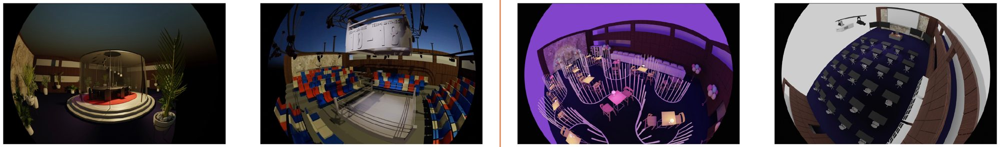
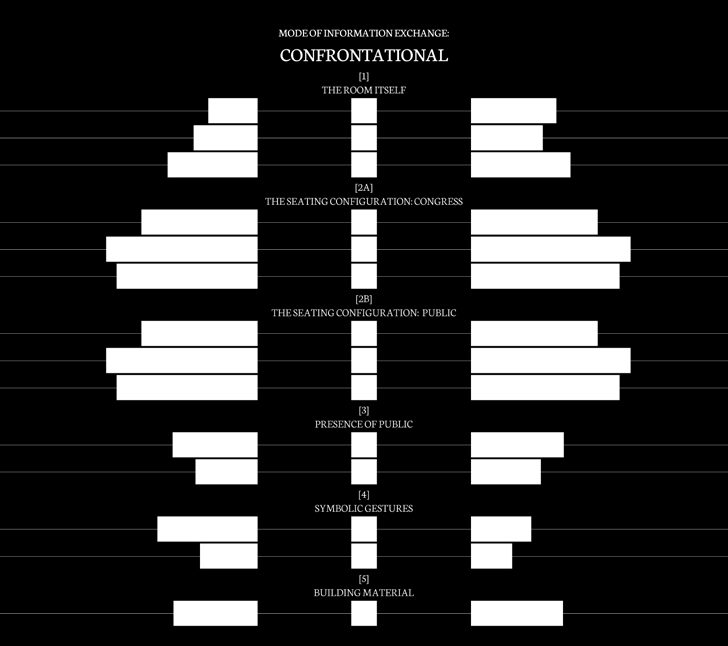
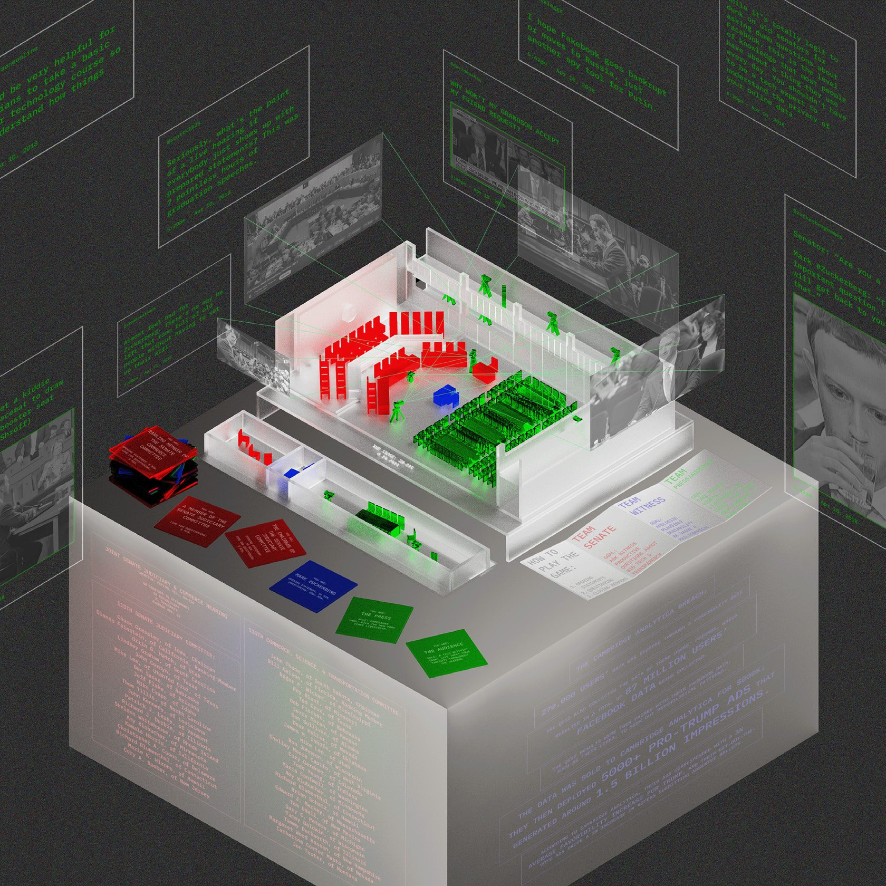

SPECTACLE & SH-216
- Semester
- Core II "Damage Control", Spring 2024
- Site
- Hart Senate Office Building, SH-216 (The Central Hearing Facility)
- Instructor
- Maria Alejandra Linares Trelles
The Congressional hearing room, redesigned as the stage it already is.
The American Congressional Hearing Room is designed for democracy and transparency. It produces spectacle. Senators stage confrontations for cameras. Witnesses perform contrition. Wood-paneled walls and marble backdrops lend institutional legitimacy to what are, more often than not, performances for an audience that is not in the room.
Rather than resist this, the project embraces it. If the hearing has become media, the room should be designed as a set: with workrooms for Congress, a red carpet for the witnesses, confessional filming areas, VIP commentary booths open to the public, and overflow seating for watching outside the hearing facility.
Four modes of exchange
To stress test the framework, four spatial arrangements were developed, each corresponding to a different mode of information exchange: conversational, confrontational, rotational and instructional. These proto-interventions challenge what a Congressional hearing room should look like, and remind us how much the room shapes what can be said in it.


The set
